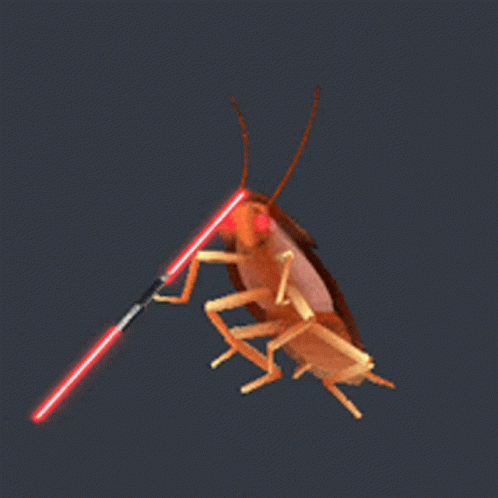
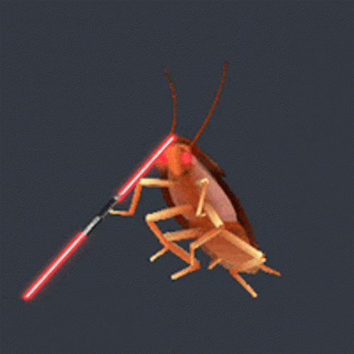
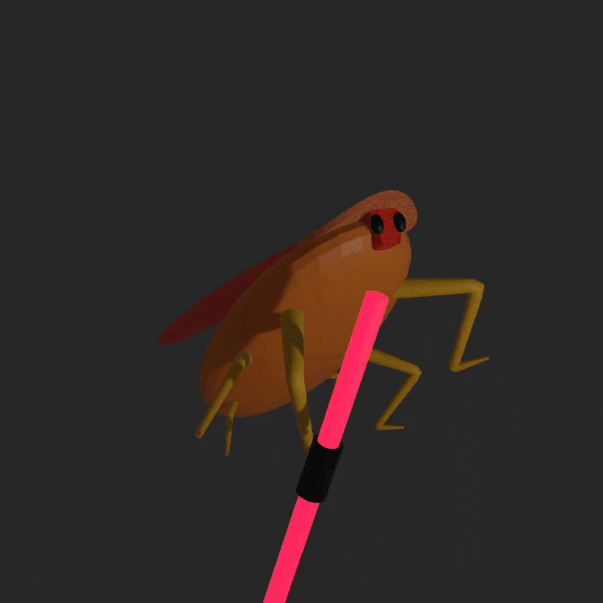
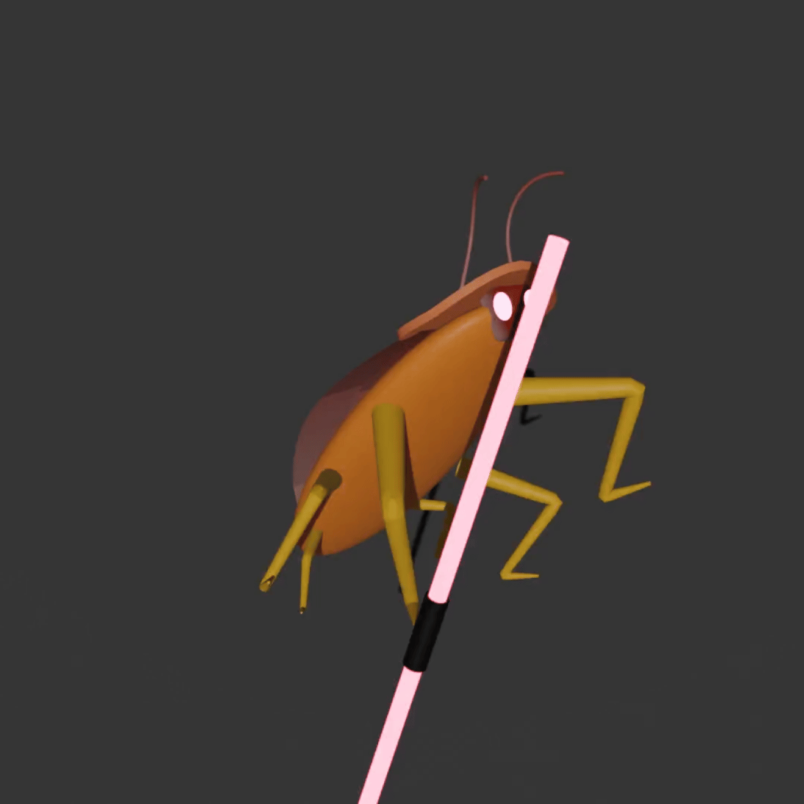
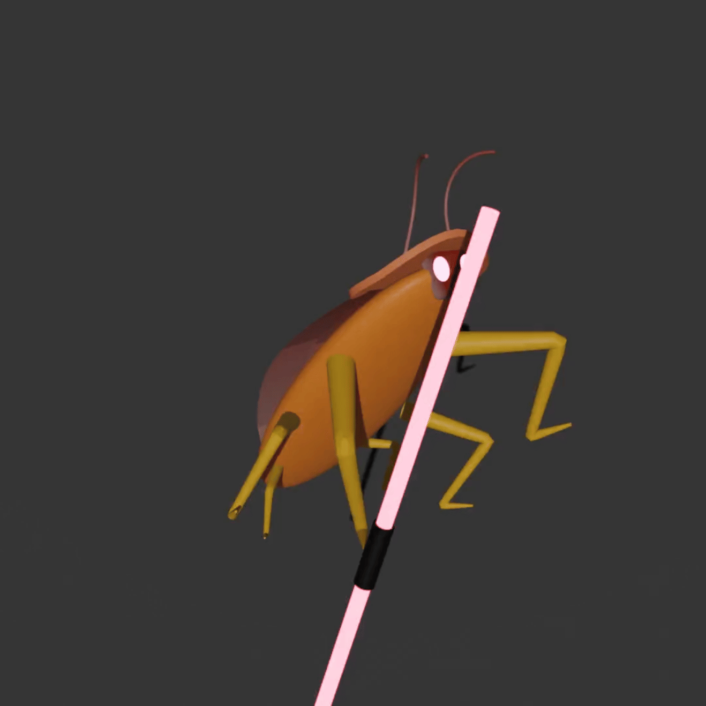

Spinning Cockroach
This Cockroach model is based on a GIF as seen to the left.
>>> V1.0 has the general shape of the body and movement
>>> V2.0 has a more accurately timed animation
>>> V3.1 has a more accurate body shape and a gradient texture was added to the wings
>>> V3.4 added a pixelation effect and removed shadow rendering
Specs:
>>> Software: Blender
>>> Final Render: EEVEE
>>> Tris: 13k
Potential improvements:
>>> Better matching of material colours
>>> Rotation and movement aligned exactly with the original GIF
>>> Lower level pixelation effect
>>> Optimise tri count
Process images
V1.0 V2.0
V3.1
V2.0
V3.1